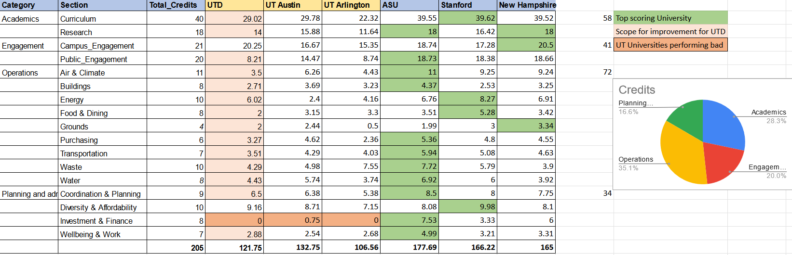

AASHE FRAMEWORK

As part of our ongoing venture, we are actively engaged in ESG reporting, particularly for AASHE STARS(Sustainability Tracking, Assessment & Rating System).
AASHE, the Association for the Advancement of Sustainability in Higher Education, is a globally recognized organization committed to advancing sustainability practices within academic institutions.
AASHE STARS is their flagship program, providing universities and colleges with a comprehensive framework to assess, track, and communicate their sustainability efforts.
This robust system covers a diverse range of categories and metrics, including environmental impact, social responsibility, and governance practices.
STEPS INVOLVED IN THE PROJECT
-
Analyzing Gaps and Mapping Processes:
The first step of the project involved identifying the gaps in the current system. We did this by going through the publicyly available data on AASHE's webstie.

After finding these gaps we worked with the Sustainability Director at the University to understand the other pain points in the reporting process.
Upon talking to the director we found that there were a lot of processes that were labor intensive and had a lot of manual processes to collect the data.
In order to optimize these processes we carried out the process mapping for them to understand them in detail.

-
Innovating Together:
In order to tackle the identified problems we collaborated with the experts in this field, CopperWire Systems(which provides Full-lifecycle ESG data traceability & reporting across your value chain)
With UTD's Sustainability Director and CopperWire, we're working together closely. This collective effort sets the stage for the changes we aim to bring.
-
Tech-Driven Transformation:
Through AI and blockchain, we're building an ESG reporting tool. This digital solution automates tasks, improving accuracy and efficiency. The integration of blockchain enhances data credibility.
-
Precision and Progress:
The ongoing implementation of the AI tool streamlines reporting, reducing errors and enhancing data precision. This directly contributes to measurable advancements in sustainability.
-
Driving Sustainability Impact:
Ultimately, our project is about making university ESG reporting more impactful. By boosting transparency, efficiency, and accuracy, we're enabling better sustainability decisions.